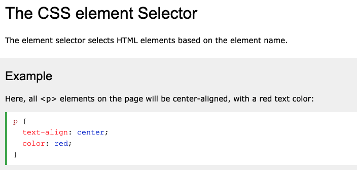
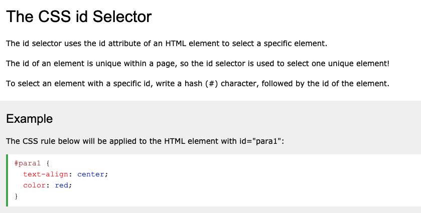
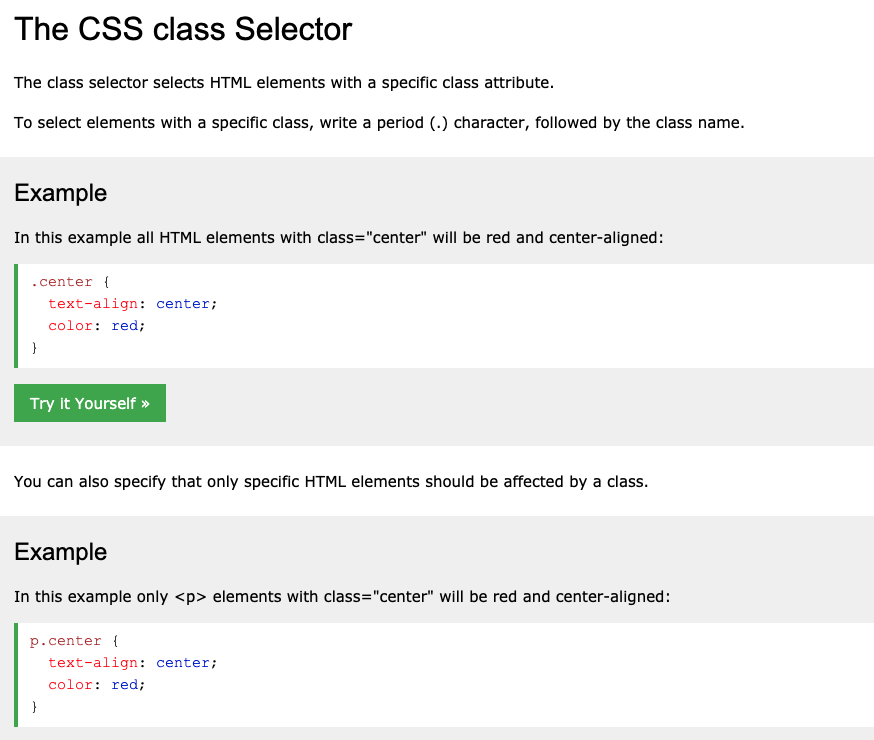
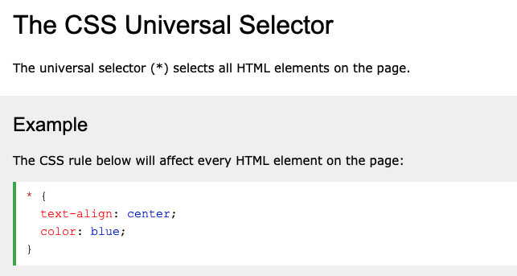
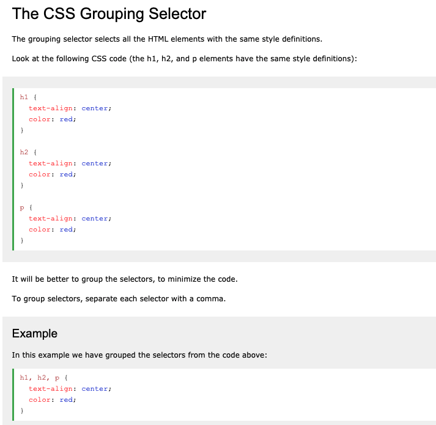
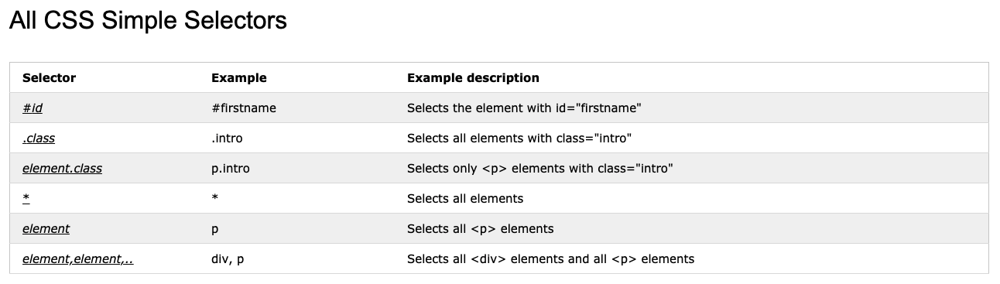

What is CSS?
CSS is the language we use to style a webpage.
- CSS stands for "Cascading Style Sheets"
- CSS describes how HTML elements should be displayed on screen, paper, or in other media
- CSS allows us to add color, layout, style, and design to our webpages
- If HTML describes the content of a website, CSS describes the presentation and appearance of a website
- CSS saves us a LOT of work- it can control the layout and style of multiple webpages at once!
- External stylesheets are stored in CSS files
What does CSS look like?
Look at the following site examples below. This is ONE HTML page displayed with four different stylesheets. All contain the same HTML content, but are styled differently depending on the CSS Stylesheet used:
-
No stylesheet

Webpage with NO CSS stylesheet applied -
Stylesheet 1

Webpage with Stylesheet 1 -
Stylesheet 2

Webpage with Stylesheet 2 -
Stylesheet 3

Webpage with Stylesheet 3 -
Stylesheet 4

Webpage with Stylesheet 4
As you can see, by creating just a few different stylesheets, we can dramatically alter the same HTML page!
Why Use CSS?
CSS is used to define styles for your webpages, including:
- Design
- Layout
- Variations in display for different devices and screen sizes
CSS also solved a big problem:
- HTML was NEVER intended to contain tags to FORMAT a web page
- HTML was created solely to describe the content of a webpage- adding tags like "font" and color attributes caused a nightmare for web developers
- CSS' creation resolved this style/ formatting issue when it took over!
CSS Syntax
A CSS rule consists of a selector and a declaration block. See the example below for how CSS is written in an external stylesheet:

- The selector points to the HTML element you want to style.
- The declaration block contains one or more declarations, separated by semicolons.
- Multiple CSS declarations are separated by semicolons, and declaration blocks are surrounded by curly braces.
See the additional example of CSS syntax below:
CSS Selectors
A CSS selector is the first part of a CSS rule. It selects the HTML element(s) you want to style.
Several different CSS selectors are used to "find" (or select) the HTML elements you want to style:
- Simple selectors: select elements by name, id, or class.
- Combinator selectors: select elements based on a specific relationship between them.
- Pseudo-class selectors: select elements based on a certain state.
- Pseudo-elements selectors: select and style a PART of an element.
- Attribute selectors: select elements based on an attribute or attribute value.
See the additional example of CSS syntax below:
Types of Selectors
- 
- 
- 
- 
- 
- 